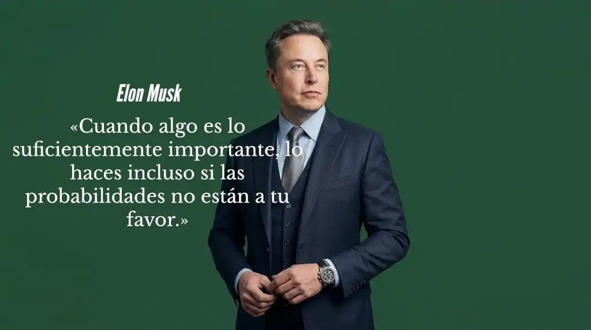

L a historia detrás de una gran fortuna puede ser tan importante como el patrimonio que finalmente alcanza una persona. Antes de convertirse en una cifra, una riqueza considerable suele estar relacionada con una actividad económica, un activo, una empresa, una profesión, una oportunidad o una circunstancia particular.
Al observar distintos casos de personas con grandes patrimonios aparecen diferencias importantes en la manera en que obtuvieron sus recursos. Algunos comenzaron creando negocios, otros desarrollaron productos o conocimientos, mientras que también existen fortunas vinculadas con herencias, inversiones, propiedades, cargos directivos, entretenimiento o propiedad intelectual.
Estas diferencias permiten observar la riqueza desde una perspectiva más amplia. Una fortuna puede construirse de manera gradual mediante la acumulación de activos y capital, pero también puede surgir después de una operación empresarial, la valorización de un patrimonio o una circunstancia extraordinaria.
Por ello, conocer el origen de distintas fortunas no consiste únicamente en identificar quién llegó a ser millonario, sino en comprender qué actividad, recurso o circunstancia estuvo detrás de la formación de su patrimonio.
En este artículo reunimos 30 formas en las que algunas personas han obtenido, construido o ampliado grandes fortunas, con el propósito de mostrar la diversidad de circunstancias que puede existir detrás de un patrimonio millonario.
De dónde proviene la fortuna de los millonarios
Las grandes fortunas pueden surgir de actividades, circunstancias y decisiones muy diferentes. Algunas tienen su origen en la creación de empresas, mientras que otras se relacionan con una herencia, una profesión de altos ingresos, la propiedad de activos o el desarrollo de una idea capaz de adquirir un gran valor económico.
Por eso, observar el patrimonio de una persona únicamente desde el resultado final puede ocultar una parte importante de la historia: el origen de los recursos y la manera en que estos fueron convirtiéndose en patrimonio.
Entre los casos conocidos aparecen empresarios, inventores, deportistas, artistas, inversionistas, ejecutivos y propietarios de bienes que alcanzaron grandes niveles de riqueza por caminos considerablemente distintos. En algunos casos, el patrimonio se construyó durante décadas; en otros, surgió a partir de una oportunidad excepcional o de la valorización de un activo.
A continuación, repasamos 30 formas en las que puede originarse una gran fortuna, tomando como referencia distintos caminos mediante los cuales personas y familias han llegado a acumular un patrimonio considerable.
- 1.Cómo un millonario puede heredar su fortuna
- 2.Por qué ganar la lotería puede hacerte millonario
- 3.Cómo los inventores pueden llegar a ser millonarios
- 4.Por qué vender una empresa puede hacerte millonario
- 5.Una profesión puede hacer millonaria a una persona
- 6.Por qué las empresas crean millonarios
- 7.Cómo un cargo directivo puede convertirte en millonario
- 8.Las personas que invierten pueden hacerse millonarias
- 9.Cómo los bienes raíces pueden crear millonarios
- 10.El mundo del entretenimiento puede crear millonarios
- 11.Cómo el deporte puede convertir a un deportista en millonario
- 12.Los derechos sobre una creación pueden crear millonarios
- 13.Un millonario puede construir su fortuna creando una marca prestigiosa
- 14.Cómo la tecnología puede crear millonarios
- 15.Crear una plataforma digital puede hacerte millonario
- 16.Por qué licenciar una creación puede hacerte millonario
- 17.Muchos millonarios construyen su riqueza con recursos naturales
- 18.Los negocios financieros también pueden crear millonarios
- 19.El negocio de la construcción puede crear millonarios
- 20.Así es como las franquicias pueden hacer millonarios
- 21.Un medio de comunicación puede convertirse en un negocio millonario
- 22.De creador de contenido a millonario
- 23.El mercado de la moda también crea grandes fortunas
- 24.Cómo la agricultura puede hacer millonario a un empresario
- 25.Varias fuentes de ingresos te hacen millonario
- 26.El comercio ha hecho millonarios y genera altos ingresos
- 27.Algunos millonarios hicieron su fortuna con el entretenimiento
- 28.La energía es uno de los negocios más rentables del mundo
- 29.El petróleo ha creado grandes fortunas en todo el mundo
- 30.El negocio de las telecomunicaciones puede hacerte millonario
Cómo un millonario puede heredar su fortuna
Una herencia puede convertirse en el origen de una gran fortuna cuando una persona recibe un patrimonio que ya había sido construido antes. Puede tratarse de dinero, propiedades, empresas, inversiones u otros activos que pasan de una generación a otra.
En algunos casos, la persona que recibe estos bienes no tuvo que construir desde cero el patrimonio que ahora posee. Su riqueza comienza con aquello que recibió de su familia y puede aumentar después si conserva, administra o desarrolla esos activos.
Un ejemplo conocido es el de Françoise Bettencourt Meyers , heredera de la participación familiar en L’Oréal. Su patrimonio está relacionado con una fortuna que comenzó varias generaciones atrás, cuando su abuelo Eugène Schueller fundó la compañía de cosméticos. Con el paso del tiempo, la participación familiar en la empresa terminó convirtiéndose en uno de los grandes patrimonios privados del mundo.
Este tipo de casos muestra que no todas las fortunas millonarias comienzan con la actividad económica de quien aparece como su propietario. Algunas tienen detrás un patrimonio familiar construido durante décadas y transmitido entre generaciones.
Por eso, la herencia puede representar para algunas personas el punto de partida de un patrimonio considerable, aunque el valor recibido, su administración y las circunstancias de cada familia pueden ser muy diferentes.
Por qué ganar la lotería puede hacerte millonario
Ganar la lotería puede cambiar por completo el patrimonio de una persona en cuestión de horas. Los premios más grandes pueden representar millones de dólares, una cantidad que supera ampliamente el patrimonio que muchas personas consiguen acumular durante toda su vida.
Un ejemplo ocurrió en Estados Unidos con Edwin Castro , quien ganó el premio mayor de Powerball en 2022, con un boleto que obtuvo un premio anunciado de US$2.040 millones. Castro eligió recibir el pago único, que después de las retenciones fiscales fue considerablemente menor que la cifra anunciada.
El caso permite ver algo particular de este tipo de fortuna: el dinero puede aparecer de manera repentina, sin que exista un proceso previo de décadas construyendo ese patrimonio. A partir de ese momento, la forma en que se administra el dinero pasa a tener una importancia enorme.
No todos los ganadores terminan conservando grandes patrimonios durante el resto de sus vidas. Impuestos, gastos, inversiones y decisiones personales pueden cambiar considerablemente la cantidad de dinero que permanece después del premio.
Por eso, ganar la lotería puede convertir a una persona en millonaria de manera inmediata, pero recibir una gran suma de dinero y conservar un gran patrimonio son situaciones diferentes.
Cómo los inventores pueden llegar a ser millonarios
Una invención puede adquirir un enorme valor cuando consigue resolver un problema de una manera que resulta útil para muchas personas o empresas. En ese momento, una idea puede transformarse en un activo con capacidad para generar ingresos.
El creador puede obtener dinero de distintas formas: fabricar y vender el producto, conceder licencias para que otras compañías lo produzcan o negociar los derechos de explotación. No siempre es necesario encargarse personalmente de fabricar y distribuir aquello que se ha inventado.
Un ejemplo es James Dyson , quien desarrolló una tecnología de aspiradoras sin bolsa y posteriormente construyó una empresa alrededor de sus propios productos e innovaciones. Con el crecimiento de Dyson, aquella creación terminó formando parte de un negocio de alcance internacional.
Cuando una invención consigue suficiente aceptación comercial, los ingresos procedentes de sus ventas, licencias o derechos pueden alcanzar cantidades muy importantes. En determinadas circunstancias, ese proceso puede llevar al inventor a convertirse en millonario.
Solo una idea buena no representa una fortuna. El valor surge cuando puede desarrollarse, protegerse y llevarse al mercado de una manera que permita obtener beneficios de ella.
Por qué vender una empresa puede hacerte millonario
Una empresa puede convertirse en uno de los activos más importantes de su propietario después de años de crecimiento. Clientes, ingresos, empleados, tecnología, marcas y una operación consolidada pueden hacer que el negocio alcance un valor muy superior al capital utilizado para ponerlo en marcha.
Cuando otra compañía, un grupo de inversionistas o un comprador adquiere el negocio, el propietario puede recibir una suma considerable a cambio de su participación. El dinero de la venta representa entonces el valor que la empresa logró acumular con el tiempo.
Un ejemplo conocido es WhatsApp . Jan Koum y Brian Acton crearon la aplicación en 2009 y, cinco años después, Meta entonces Facebook acordó adquirirla por aproximadamente US$19.000 millones entre efectivo y acciones. La operación convirtió el valor creado alrededor de la empresa en una fortuna para sus fundadores.
En operaciones de este tamaño, el patrimonio no proviene solamente de los ingresos que generaba el negocio mientras estaba en funcionamiento. Una parte importante puede materializarse en el momento en que sus propietarios venden su participación.
Por esta vía, una empresa que comenzó como un proyecto pequeño puede terminar representando un patrimonio de millones de dólares y convertir a sus propietarios en millonarios.
Una profesión puede hacer millonaria a una persona
No todas las profesiones tienen el mismo nivel de remuneración. Algunas requieren conocimientos muy especializados y pueden ofrecer ingresos considerablemente altos, especialmente cuando existe experiencia, responsabilidad y demanda por ese tipo de trabajo.
Un ejemplo puede encontrarse en profesiones como la cirugía plástica, el derecho corporativo, la medicina especializada, la ingeniería vinculada con industrias de alto valor, la dirección empresarial o la aviación comercial. Una persona con suficiente experiencia y reconocimiento dentro de estos campos puede alcanzar ingresos muy superiores a los de otras ocupaciones y mantenerlos durante buena parte de su trayectoria profesional.
Si una persona mantiene un nivel de ingresos de este tipo durante suficiente tiempo y consigue conservar una parte importante de lo que recibe, el dinero puede transformarse progresivamente en patrimonio mediante propiedades, empresas u otros activos.
En esas circunstancias, una profesión de altos ingresos puede convertirse en la principal fuente de capital con la que una persona construye una fortuna, sin necesidad de que el origen del patrimonio sea una empresa propia o una herencia familiar.
Por esta vía, los ingresos obtenidos por el ejercicio de una profesión pueden terminar llevando a una persona a convertirse en millonaria, aunque el resultado depende tanto del nivel de ingresos como de la capacidad para conservar y administrar ese dinero a lo largo de los años.
Por qué las empresas crean millonarios
Una empresa puede convertirse en una fuente de riqueza cuando consigue transformar una actividad comercial en un negocio cada vez más grande. A medida que aumentan sus clientes, ventas, operaciones y capacidad de generar beneficios, también puede crecer el valor económico de la compañía.
Parte del dinero que produce el negocio puede utilizarse para contratar personal, abrir nuevos mercados, desarrollar productos, adquirir activos o aumentar su capacidad de producción. De esta manera, el crecimiento de la empresa puede generar más oportunidades para seguir expandiendo el propio negocio.
Un ejemplo conocido es Amancio Ortega , quien comenzó su trayectoria empresarial en el sector textil y terminó construyendo Inditex alrededor de marcas como Zara. El crecimiento de la compañía convirtió su participación en el negocio en una parte fundamental de su patrimonio.
El propietario no necesita retirar todo el dinero que genera la empresa para aumentar su riqueza. Mientras conserve una participación importante, el aumento del valor y del tamaño del negocio puede reflejarse directamente en su patrimonio.
Por esta razón, crear una empresa y conseguir que crezca durante años puede llevar a una persona a acumular una fortuna millonaria, especialmente cuando mantiene una participación significativa en el negocio.
Cómo un cargo directivo puede convertirte en millonario
Llegar a un cargo directivo dentro de una compañía puede representar mucho más que recibir un salario elevado. En algunas empresas, los ejecutivos también reciben acciones, opciones de compra u otros incentivos vinculados con el valor de la compañía.
Un ejecutivo puede recibir inicialmente una cantidad determinada de acciones u opciones y, si la empresa crece considerablemente, esos derechos pueden terminar representando una suma muy superior a la que tenían cuando fueron concedidos.
Un ejemplo conocido es Steve Ballmer , quien durante sus años como ejecutivo de Microsoft recibió acciones de la compañía y terminó acumulando una participación que tuvo un enorme valor a medida que el negocio creció. Su patrimonio estuvo estrechamente relacionado con esa participación empresarial.
En este tipo de situaciones, el patrimonio puede crecer mientras la persona continúa desempeñando su cargo. El salario representa una fuente de ingresos, pero la participación en la empresa puede convertirse en el componente de mayor valor.
Así, una posición directiva acompañada de acciones u opciones puede llevar a una persona a convertirse en millonaria cuando la compañía experimenta un crecimiento extraordinario y conserva una participación de suficiente valor.
Cuando una inversión aumenta extraordinariamente de valor
Una inversión puede terminar representando una parte importante de un patrimonio cuando aquello que se adquirió aumenta considerablemente de valor. La diferencia entre el precio pagado inicialmente y el valor alcanzado después puede ser enorme cuando el crecimiento se mantiene durante muchos años.
Esto puede suceder con distintos tipos de activos. Una propiedad, una empresa, una participación en un proyecto o incluso una creación con valor comercial pueden experimentar una valorización muy superior a la esperada por su propietario.
Un ejemplo puede encontrarse en el sector inmobiliario. Francis Greenburger comenzó adquiriendo propiedades en Nueva York y, según relató a Fortune, en 1975 compró dos edificios por alrededor de US$75.000. Décadas después, afirmó que esos mismos edificios, que todavía conservaba, tenían un valor cercano a los US$75 millones.
Una diferencia de esa magnitud puede transformar por completo el peso de un activo dentro del patrimonio de una persona. En este caso, el resultado estuvo relacionado con la adquisición de una propiedad, su conservación durante décadas y el aumento de su valor con el tiempo.
Casos así son excepcionales y no representan el comportamiento habitual de una inversión. El resultado depende del activo, el precio de adquisición, el tiempo de permanencia y las condiciones que afectan su valor. Cuando una valorización extraordinaria ocurre, puede convertirse en una de las formas mediante las cuales algunas personas llegan a acumular patrimonios millonarios.
Cómo los bienes raíces pueden crear millonarios
El patrimonio inmobiliario puede crecer a medida que una persona adquiere y conserva diferentes propiedades durante largos periodos. Viviendas, locales comerciales, terrenos, oficinas o edificios pueden formar parte de una estructura patrimonial que aumenta de tamaño con cada nueva adquisición.
Los inmuebles también pueden producir ingresos mientras permanecen en propiedad. Un local alquilado, por ejemplo, puede generar rentas periódicas que después se utilizan para mantener el activo, adquirir otra propiedad o ampliar el patrimonio existente.
Un ejemplo conocido es Donald Bren , quien construyó gran parte de su fortuna a través del desarrollo y la propiedad inmobiliaria en California. Su patrimonio estuvo relacionado durante décadas con la adquisición, desarrollo y conservación de grandes cantidades de propiedades.
La combinación entre propiedades acumuladas, ingresos por alquiler y valorización de los inmuebles puede hacer que el patrimonio crezca de manera progresiva. No es necesario que una sola propiedad alcance un valor extraordinario cuando existe un conjunto considerable de activos.
Con el paso de los años, una persona que consigue reunir suficientes propiedades puede llegar a convertirse en millonaria por el valor acumulado de sus bienes y los ingresos que estos producen.
El mundo del entretenimiento puede crear millonarios
Una carrera en el entretenimiento puede alcanzar un enorme valor económico cuando una persona consigue convertirse en una figura reconocida por una audiencia masiva. El cine, la televisión, la música y otras industrias pueden generar ingresos muy elevados para quienes alcanzan posiciones destacadas dentro de ellas.
Arnold Schwarzenegger es un ejemplo de cómo una trayectoria dentro del entretenimiento puede extenderse mucho más allá de una sola película. Después de alcanzar reconocimiento internacional como actor, participó en numerosas producciones y consiguió contratos relacionados con su imagen y su trabajo en la industria cinematográfica.
Cuando una carrera alcanza esa dimensión, los ingresos pueden proceder de diferentes proyectos y mantenerse durante muchos años. La exposición pública también puede abrir oportunidades comerciales que no existirían sin el reconocimiento conseguido dentro de la industria.
El tamaño de la audiencia termina siendo un factor importante. Una persona capaz de atraer a millones de espectadores puede generar un valor económico considerable alrededor de su trabajo y convertir una carrera artística en una fuente importante de patrimonio.
Por esta vía, una trayectoria prolongada y de gran alcance dentro del entretenimiento puede llevar a una persona a convertirse en millonaria, especialmente cuando consigue mantener durante años el valor comercial de su trabajo y su reconocimiento público.
Cómo el deporte puede convertir a un deportista en millonario
El deporte profesional puede generar ingresos extraordinarios cuando un deportista alcanza un nivel de rendimiento que lo convierte en una figura reconocida dentro de su disciplina. Los resultados obtenidos en la competencia pueden abrirle las puertas a contratos, premios y oportunidades comerciales de gran valor.
Michael Jordan es uno de los ejemplos más conocidos. Gran parte de su patrimonio no se explica únicamente por lo que ganó durante su carrera en el baloncesto, sino también por los contratos comerciales y negocios vinculados con su nombre, especialmente su relación con Nike y la marca Jordan.
Una carrera deportiva de alto nivel puede generar dinero desde diferentes frentes: salarios o contratos para competir, premios, patrocinios, publicidad, derechos de imagen y acuerdos comerciales. Cuando varias de estas fuentes se mantienen durante años, los ingresos acumulados pueden alcanzar cantidades extraordinarias.
En determinados casos, el reconocimiento conseguido dentro del deporte termina teniendo un valor comercial propio. La audiencia, los resultados y la reputación del deportista pueden convertirse en activos económicos que continúan generando ingresos incluso fuera de las competencias.
De esta manera, una trayectoria deportiva excepcional puede llevar a una persona a convertirse en millonaria cuando sus ingresos profesionales y comerciales alcanzan una escala suficientemente grande.
Los derechos sobre una creación pueden crear millonarios
Una creación puede seguir generando dinero mucho después de haber sido terminada cuando su autor conserva los derechos sobre ella. Una obra puede convertirse en un activo que continúa produciendo ingresos con el paso del tiempo, especialmente cuando mantiene una demanda constante.
Esto puede ocurrir con una canción, un libro, una película, un personaje, una obra artística o cualquier otra creación protegida cuyos derechos permitan obtener pagos por su reproducción, distribución, publicación o utilización comercial.
J.K. Rowling J.K. Rowling es un ejemplo conocido. La autora no solo obtuvo ingresos por la publicación de los libros de Harry Potter, sino también por los derechos relacionados con las adaptaciones cinematográficas, productos y otras formas de explotación de la propiedad intelectual creada alrededor de la historia.
Cuando una creación consigue una audiencia amplia, los derechos asociados pueden generar ingresos desde diferentes mercados y durante largos periodos. La obra original puede seguir produciendo dinero incluso cuando su creador ya no está realizando directamente una nueva actividad para cada transacción.
Por esta vía, una creación que mantiene un alto valor comercial puede convertirse en una fuente importante de patrimonio y llevar a su propietario a acumular una fortuna millonaria.
Un millonario puede construir su fortuna creando una marca prestigiosa
Una marca puede llegar a tener un valor económico muy superior al de los productos que vende. Cuando los consumidores la reconocen, confían en ella y están dispuestos a elegirla frente a otras alternativas, ese reconocimiento puede convertirse en una ventaja comercial difícil de construir.
Apple es un ejemplo de cómo una marca puede adquirir una enorme dimensión dentro de un mercado. La compañía comenzó con productos tecnológicos y, con el paso de las décadas, construyó una identidad asociada a sus dispositivos, servicios y experiencia de usuario.
Una marca con ese nivel de reconocimiento puede facilitar la entrada en nuevas categorías, ampliar su presencia internacional y mantener una relación constante con sus consumidores. Cada nuevo producto o servicio puede beneficiarse del valor que la marca ya ha construido.
Cuando una persona conserva una participación importante en la empresa propietaria de una marca de este nivel, el crecimiento comercial de la marca también puede reflejarse en el valor de su participación.
De esta manera, una marca que consigue convertirse en una referencia dentro de su mercado puede terminar siendo uno de los principales activos detrás de un patrimonio.
Cómo la tecnología puede crear millonarios
Una tecnología puede adquirir un enorme valor cuando consigue resolver un problema de manera más rápida, eficiente o económica que las alternativas existentes. El potencial aumenta cuando esa solución puede ser utilizada por una gran cantidad de personas o empresas.
Microsoft es un ejemplo de cómo el desarrollo de tecnología puede convertirse en un negocio de escala global. El crecimiento de productos como Windows y posteriormente otros servicios y herramientas permitió que la compañía extendiera sus soluciones a millones de usuarios y organizaciones.
El modelo puede generar ingresos mediante la venta de productos, suscripciones, licencias o servicios tecnológicos. A medida que aumenta el número de usuarios y la empresa entra en nuevos mercados, también puede crecer el valor del negocio.
Para sus propietarios, la creación de tecnología no representa únicamente una fuente de ingresos. La participación que conservan en la empresa puede convertirse en un activo de gran valor si el negocio consigue crecer durante años.
Así, desarrollar una tecnología con utilidad comercial y conseguir llevarla a una escala suficientemente grande puede transformar una idea técnica en una empresa capaz de generar un patrimonio millonario.
Crear una plataforma digital puede hacerte millonario
Una plataforma digital puede alcanzar un enorme valor cuando consigue reunir a grandes cantidades de personas alrededor de una misma actividad. Su importancia no depende únicamente de la tecnología utilizada, sino de la cantidad de usuarios que encuentran una razón para permanecer y utilizarla.
Facebook , por ejemplo, comenzó como una plataforma para conectar personas y con el tiempo amplió sus funciones, su alcance y su modelo de negocio hasta convertirse en una de las mayores redes sociales del mundo.
Las plataformas pueden generar ingresos de distintas maneras: publicidad, comisiones por transacciones, suscripciones, servicios premium o pagos realizados dentro del propio sistema. En algunos modelos, además, cada nuevo usuario puede aumentar el valor de la plataforma para los demás.
Ese crecimiento puede producir un efecto acumulativo. Una plataforma con millones de usuarios puede atraer anunciantes, empresas, creadores de contenido o nuevos participantes que, a su vez, hacen que el servicio resulte más atractivo.
Cuando sus fundadores o propietarios conservan una participación importante en el negocio, el crecimiento de la plataforma puede traducirse en un aumento considerable del valor de esa participación.
Por qué licenciar una creación puede hacerte millonario
No siempre es necesario fabricar un producto, abrir tiendas o encargarse directamente de su comercialización para obtener dinero de una creación. En algunos casos, el propietario puede autorizar a otras empresas para utilizarla a cambio de pagos establecidos en un contrato.
Este modelo puede aplicarse a una tecnología, una fórmula, un diseño, una marca, un procedimiento o determinados conocimientos que tengan utilidad comercial. La empresa que recibe la autorización puede encargarse de llevarlos al mercado mientras el propietario conserva los derechos sobre aquello que está licenciando.
Un ejemplo conocido es George de Mestral , inventor del sistema de cierre de gancho y bucle conocido como Velcro. Tras desarrollar su invención, obtuvo protección mediante patentes y posteriormente permitió que distintas empresas utilizaran la tecnología bajo acuerdos de licencia.
La ventaja de este modelo está en que una misma creación puede ser aprovechada por diferentes compañías, productos o mercados sin que su propietario tenga que desarrollar personalmente cada operación comercial. Los acuerdos pueden establecer pagos por unidad, porcentajes sobre las ventas o cantidades determinadas.
Cuando una propiedad con utilidad comercial consigue ser licenciada de forma amplia y durante largos periodos, los pagos procedentes de terceros pueden convertirse en una fuente importante de ingresos y contribuir a la formación de un patrimonio millonario.
Muchos millonarios construyen su riqueza con recursos naturales
Algunas de las mayores fortunas de la historia han estado relacionadas con recursos que se encuentran directamente en la naturaleza. Oro, petróleo, gas, cobre, carbón y diamantes han generado industrias enteras alrededor de su extracción, transformación y comercialización.
La riqueza puede surgir de distintas posiciones dentro de esa cadena. Una persona puede ser propietaria de terrenos con recursos aprovechables, participar en una compañía extractiva o controlar una empresa encargada de procesarlos y llevarlos hasta los mercados donde son demandados.
El atractivo de estos negocios está relacionado con la escala. Un solo yacimiento puede contener cantidades enormes de un recurso cuyo precio se determina en mercados nacionales e internacionales. Cuando la extracción resulta rentable, cada nueva operación puede representar una venta de gran magnitud.
John D. Rockefeller es uno de los ejemplos históricos más conocidos. Su fortuna estuvo vinculada principalmente al petróleo y, en particular, al crecimiento de Standard Oil, compañía que llegó a controlar una parte importante de la industria petrolera estadounidense.
En este camino, la riqueza no depende de inventar un producto nuevo, sino de controlar, extraer, transformar o comercializar un recurso que ya posee un valor económico. La escala de la operación y el tiempo durante el que puede mantenerse son factores decisivos.
Los negocios financieros también pueden crear millonarios
El dinero también puede convertirse en la materia prima de un negocio. Los bancos, las aseguradoras, las compañías de financiación, las gestoras de activos y otras empresas financieras obtienen ingresos mediante operaciones relacionadas con el crédito, la administración de capital, los seguros y diferentes servicios financieros.
Un banco, por ejemplo, puede obtener ingresos al conceder préstamos y cobrar intereses, mientras una aseguradora recibe primas a cambio de asumir determinados riesgos. En otros modelos, la empresa cobra comisiones por administrar inversiones, procesar operaciones o facilitar el acceso a determinados servicios.
J.P. Morgan representa a gran escala cómo una actividad financiera puede convertirse en una enorme organización empresarial. El grupo desarrolla operaciones de banca de inversión, gestión de activos, banca comercial y otros servicios dirigidos tanto a personas como a empresas e instituciones.
La particularidad de este sector está en el volumen. Una operación individual puede generar un ingreso relativamente pequeño, pero millones de clientes, préstamos, inversiones o transacciones pueden convertir ese mismo modelo en un negocio de dimensiones extraordinarias.
Para sus propietarios, fundadores o accionistas, la riqueza puede proceder tanto de los beneficios distribuidos a lo largo de los años como del valor que alcanza la compañía cuando consigue establecerse dentro del sistema financiero.
El negocio de la construcción puede crear millonarios
La construcción puede generar grandes oportunidades económicas cuando un terreno se transforma en un proyecto capaz de producir ingresos o venderse por un valor superior al de los recursos destinados a desarrollarlo.
Viviendas, edificios, centros comerciales, hoteles y proyectos industriales requieren capital, planificación, permisos, diseño y ejecución. El desarrollador coordina estos elementos para convertir un espacio disponible en una propiedad preparada para entrar al mercado.
Donald Bren es un ejemplo conocido dentro del sector inmobiliario estadounidense. Su trayectoria estuvo marcada por el desarrollo y la adquisición de grandes extensiones de propiedades en California, incluyendo proyectos residenciales y comerciales.
El resultado económico puede aparecer de diferentes maneras: mediante la venta de las unidades terminadas, la comercialización completa del proyecto o la conservación de los inmuebles para obtener ingresos durante años. En cada caso, una parte importante del negocio está en crear valor a partir del desarrollo.
A diferencia de quien simplemente compra una propiedad terminada, el desarrollador participa en el proceso que la convierte en un activo comercial. La capacidad para identificar oportunidades, conseguir financiación y ejecutar proyectos a gran escala puede convertirse en una actividad extremadamente rentable.
Así es como las franquicias pueden hacer millonarios
Un negocio puede dejar de depender de un solo establecimiento cuando su forma de operar consigue convertirse en un modelo que otras personas pueden reproducir. La franquicia permite llevar esa fórmula a diferentes ciudades y mercados bajo una misma identidad comercial.
El propietario de la marca puede conceder a terceros el derecho de utilizar su nombre, productos, procesos y sistema de operación a cambio de determinadas condiciones económicas. Quien adquiere la franquicia, por su parte, se encarga de administrar el establecimiento y asumir buena parte de la operación diaria.
McDonald's es uno de los ejemplos más conocidos de este modelo. Su expansión internacional se ha apoyado durante décadas en una extensa red de restaurantes operados bajo diferentes estructuras de propiedad y franquicia, manteniendo una identidad y unos procesos comunes.
Para el propietario de una franquicia, cada nueva unidad representa una oportunidad adicional de generar ingresos mediante regalías, tarifas iniciales, suministro de productos u otros acuerdos establecidos con los operadores.
La particularidad está en que el crecimiento puede producirse sin que todas las nuevas ubicaciones tengan que ser financiadas y administradas directamente por el dueño de la marca. Cuando el modelo logra replicarse a gran escala, una sola idea comercial puede terminar presente en cientos o miles de establecimientos.

Un medio de comunicación puede convertirse en un negocio millonario
Una audiencia numerosa puede convertirse en uno de los activos más valiosos de un negocio cuando existe una relación constante entre las personas y los contenidos que consume.
Periódicos, revistas, canales de televisión, emisoras y medios digitales pueden construir esa audiencia durante años y monetizarla mediante publicidad, suscripciones, patrocinios, acuerdos comerciales, eventos, productos editoriales y otras fuentes de ingresos.
Rupert Murdoch construyó una parte importante de su trayectoria empresarial alrededor de los medios de comunicación. A través de compañías como News Corporation y posteriormente otros grupos vinculados a sus negocios, participó en periódicos, cadenas de televisión y diferentes empresas de contenidos.
La ventaja de un medio consolidado es que una misma audiencia puede generar diferentes oportunidades comerciales. Una publicación puede lanzar nuevas ediciones, incorporar formatos digitales, crear productos propios o utilizar su alcance para entrar en otras áreas relacionadas con los contenidos.
Cuando la audiencia alcanza una escala considerable y consigue mantenerse durante el tiempo, la atención de millones de personas puede transformarse en un activo comercial capaz de sostener un negocio de gran dimensión.
De creador de contenido a millonario
Crear contenido de forma constante puede convertirse en el punto de partida de una carrera empresarial cuando una persona consigue reunir una audiencia que sigue su trabajo y confía en lo que ofrece.
MrBeast es uno de los ejemplos más conocidos de este modelo. Su actividad comenzó principalmente alrededor de la creación de videos para YouTube, pero con el tiempo su audiencia le permitió desarrollar productos y empresas en diferentes categorías, entre ellas alimentos y otros negocios de consumo.
La audiencia puede convertirse en una ventaja para lanzar nuevos productos porque el creador ya dispone de un canal de comunicación directo con millones de personas. Una publicación, un video o una recomendación pueden servir para presentar una nueva marca sin tener que comenzar completamente desde cero.
A partir de ahí, el creador puede diversificar sus fuentes de ingresos mediante publicidad, productos propios, acuerdos comerciales, suscripciones, eventos, licencias o empresas independientes de su actividad original.
La particularidad de este camino está en que la atención acumulada alrededor de una persona puede utilizarse como punto de partida para construir negocios que terminan existiendo más allá del contenido que los originó.
El mercado de la moda también crea grandes fortunas
El diseño puede cambiar por completo la percepción que una persona tiene sobre un producto. Una prenda, un accesorio, un mueble o un artículo de belleza puede dejar de competir únicamente por su utilidad cuando su apariencia, calidad o concepto consiguen despertar un interés especial entre los consumidores.
Ralph Lauren construyó su trayectoria empresarial alrededor de esta idea. Comenzó diseñando corbatas y posteriormente desarrolló una amplia colección de prendas y productos asociados con un determinado estilo, hasta convertir su nombre en una compañía internacional de moda y consumo.
En este mercado, el precio de venta no depende solamente de cuánto cuesta fabricar un artículo. El diseño, los materiales, la presentación, la exclusividad y la percepción que genera el producto pueden influir considerablemente en lo que el consumidor está dispuesto a pagar.
Cuando una colección consigue buena aceptación, el mismo concepto puede extenderse a nuevas prendas, accesorios y categorías de productos. La producción a gran escala permite llevar esas creaciones a diferentes mercados y multiplicar el número de unidades comercializadas.
Así, una idea relacionada con el diseño puede pasar de ser una creación individual a convertirse en una línea de productos capaz de generar ventas a gran escala y sostener una compañía durante décadas.
Cómo la agricultura puede hacer millonario a un empresario
La agricultura puede convertirse en un negocio de gran escala cuando la producción deja de depender únicamente de una finca y comienza a integrarse con procesos de comercialización, transformación y distribución.
Café, cacao, frutas, palma, cereales, carne y otros productos agrícolas tienen mercados que pueden extenderse mucho más allá del lugar donde fueron producidos. Una operación eficiente puede abastecer a compradores nacionales o incluso participar en cadenas de exportación.
Jorge Paulo Lemann es un ejemplo de empresario cuya trayectoria ha estado vinculada, entre otros sectores, con grandes compañías de alimentos y bebidas. A través de inversiones y adquisiciones, participó en la expansión de negocios que dependen de extensas cadenas de producción y comercialización de productos de consumo.
La agroindustria permite además participar en diferentes etapas de la cadena. Una empresa puede producir la materia prima, procesarla, empacarla y distribuirla bajo sus propios canales, capturando valor en varias fases antes de que el producto llegue al consumidor.
Cuando estas operaciones consiguen suficiente escala, la tierra deja de ser el único activo relevante y la cadena completa de producción puede convertirse en el verdadero motor económico del negocio.
Varias fuentes de ingresos te hacen millonario
Una gran fortuna puede construirse a partir de diferentes actividades que se desarrollan en momentos distintos. Una persona puede comenzar con los ingresos de su profesión, utilizar parte de ellos para crear un negocio y posteriormente destinar los resultados obtenidos a propiedades, inversiones u otras oportunidades.
Warren Buffett representa una combinación especialmente amplia de fuentes dentro de una misma trayectoria. Sus actividades empresariales, inversiones y participación en compañías han estado relacionadas durante décadas con la formación de su riqueza.
La característica de este camino es que las fuentes no tienen por qué funcionar de manera aislada. Una puede convertirse en el capital necesario para desarrollar la siguiente: los ingresos de una empresa pueden financiar una adquisición, una propiedad puede producir rentas y esas rentas pueden volver a invertirse.
Con el tiempo, el origen de cada activo puede resultar menos importante que la relación que existe entre ellos. El dinero generado por una actividad puede alimentar otra y, posteriormente, los resultados de ambas pueden utilizarse para crear nuevas fuentes.
El resultado es una estructura en la que varias actividades económicas terminan apoyándose entre sí, haciendo que la riqueza no dependa de una única fuente de ingresos.
El comercio ha hecho millonarios y genera altos ingresos
El comercio ha sido una de las formas más antiguas de generar riqueza. Su principio es sencillo: adquirir productos donde tienen un determinado precio y encontrar compradores dispuestos a pagar más por ellos en otro lugar, momento o mercado.
John D. Rockefeller , antes de convertirse en una de las figuras más conocidas de la industria petrolera, comenzó su trayectoria empresarial trabajando en actividades comerciales y de distribución. Su experiencia con las operaciones, los costos y la circulación de mercancías formó parte de sus primeros años en los negocios.
El comerciante puede encontrar oportunidades en las diferencias de precio, disponibilidad y demanda. Puede comprar directamente a fabricantes, importar productos, distribuirlos a otros negocios o venderlos al consumidor final. En cada operación, el margen entre el costo y el precio de venta determina una parte fundamental del resultado.
La escala puede cambiar completamente las dimensiones de esta actividad. Vender con un margen moderado sobre una pequeña cantidad de productos produce resultados limitados; hacerlo sobre grandes volúmenes y durante largos periodos puede generar cantidades mucho mayores.
La clave está en conseguir que el margen de cada operación, multiplicado por un volumen suficiente de ventas, produzca un resultado sostenido. Por eso el comercio puede pasar de unas pocas transacciones a convertirse en una actividad de enorme escala.
Algunos millonarios hicieron su fortuna con el entretenimiento
La industria del entretenimiento mueve grandes cantidades de dinero alrededor de películas, conciertos, programas, espectáculos y producciones que consiguen atraer a millones de personas.
Quienes participan en estos negocios pueden recibir ingresos por presentaciones, contratos, derechos, producción y otras actividades relacionadas con cada proyecto.
Las mayores fortunas pueden aparecer cuando una persona deja de depender únicamente de su trabajo frente al público y empieza a participar también en la producción o propiedad de los negocios que generan esos espectáculos.
Una carrera que comienza en el escenario puede terminar vinculada a empresas, producciones y derechos que continúan generando dinero durante años. En ese punto, el entretenimiento deja de ser únicamente una profesión y puede convertirse en una actividad empresarial.
La energía es uno de los negocios más rentables del mundo
La energía es uno de los sectores que más dinero mueve en la economía. El petróleo, el gas, la electricidad y las fuentes renovables forman cadenas empresariales en las que intervienen compañías dedicadas a producir, transportar, distribuir y comercializar energía a gran escala.
La generación de riqueza dentro de este sector depende de la participación que una persona tenga en el negocio y de la capacidad de la empresa para operar a gran escala. Algunas compañías producen electricidad, otras transportan y distribuyen energía, mientras que también existen empresas dedicadas a la comercialización y el suministro para hogares, empresas e industrias.
La escala es uno de los elementos que hace especialmente atractivo este sector. Una compañía que abastece grandes cantidades de energía puede generar ingresos de forma continua mientras mantiene una infraestructura capaz de atender a miles o millones de consumidores.
También existen oportunidades cuando una empresa consigue expandirse hacia nuevos mercados, desarrollar proyectos de generación o aumentar su capacidad de producción. Cada nueva instalación puede ampliar el volumen de energía que la compañía está en condiciones de ofrecer.
Cuando los propietarios conservan una participación importante en una empresa energética que consigue crecer durante años, los resultados del negocio pueden reflejarse directamente en el valor de sus participaciones.
El petróleo ha creado grandes fortunas en todo el mundo
El petróleo ha sido durante décadas uno de los negocios más importantes de la economía mundial. Su industria abarca desde la exploración y extracción de los yacimientos hasta el transporte, la refinación y la comercialización de los productos derivados.
La actividad requiere grandes inversiones, infraestructura especializada y operaciones que pueden extenderse durante años. Por esa razón, las compañías que participan en diferentes etapas de la cadena pueden alcanzar dimensiones empresariales muy grandes cuando desarrollan proyectos a una escala suficiente.
John D. Rockefeller es uno de los ejemplos históricos más conocidos. Su fortuna estuvo vinculada al crecimiento de Standard Oil, empresa que llegó a tener una posición dominante en la industria petrolera estadounidense durante finales del siglo XIX y comienzos del XX.
El petróleo también permite observar cómo un recurso natural puede dar origen a negocios distintos alrededor de una misma materia prima. La extracción constituye solo una parte de la actividad: el transporte, la refinación, la distribución y la venta de combustibles también representan operaciones económicas de gran escala.
Cuando los propietarios conservan una participación importante en compañías de este tamaño, el valor del negocio y los beneficios generados por sus operaciones pueden convertirse en los principales componentes de su riqueza.
El negocio de las telecomunicaciones puede hacerte millonario
Millones de personas utilizan todos los días servicios de telefonía, internet y comunicación, lo que ha convertido a las telecomunicaciones en una industria de enorme alcance y con una demanda constante.
Detrás de estos servicios existen empresas que construyen y mantienen redes, operan infraestructura y cobran a sus usuarios por acceder a diferentes formas de comunicación. Los ingresos pueden proceder de planes móviles, conexiones de internet, servicios empresariales y otros productos relacionados con la conectividad.
La escala es fundamental en este negocio. Una compañía que consigue reunir una gran cantidad de usuarios puede generar ingresos recurrentes mientras amplía su cobertura y desarrolla nuevos servicios. La infraestructura construida también puede representar un activo importante para la empresa.
La expansión hacia nuevas ciudades y mercados permite aumentar el número de clientes atendidos. Al mismo tiempo, una red consolidada puede sostener operaciones durante muchos años, siempre que la compañía mantenga su capacidad para competir y adaptarse a los cambios tecnológicos.
Cuando los propietarios conservan una participación importante en una empresa de telecomunicaciones de gran escala, el crecimiento de la base de usuarios, los ingresos recurrentes y el valor de la infraestructura pueden reflejarse en el valor de esa participación.
Qué hay detrás de la fortuna de los millonarios
Las 30 formas analizadas muestran que detrás de una gran fortuna puede existir una combinación muy particular de actividad económica, patrimonio, conocimientos, capital, oportunidades y circunstancias personales.
Algunas de estas situaciones pueden comenzar con recursos limitados, mientras que otras dependen de un patrimonio, una posición profesional, acceso a capital o determinadas condiciones que no están disponibles para todas las personas. Las condiciones de partida, por tanto, pueden influir en las posibilidades que tiene cada individuo para desarrollar o ampliar su patrimonio.
Esto permite entender la riqueza desde una perspectiva menos simplificada. Warren Buffett , por ejemplo, construyó gran parte de su patrimonio mediante la inversión y la participación en empresas; Michael Bloomberg lo hizo principalmente a través de la empresa de información financiera y medios que cofundó.
J.K. Rowling convirtió la propiedad intelectual de Harry Potter en una fuente de riqueza a través de sus libros y las distintas extensiones de la franquicia; mientras que Oprah Winfrey transformó su trayectoria en televisión en un negocio de medios y producción.
Las historias son diferentes, pero permiten observar una misma realidad: una gran fortuna no siempre responde al mismo proceso ni puede explicarse por una sola variable. Puede ser el resultado de años de trabajo, una empresa, la acumulación de activos, una creación intelectual o una combinación de varios factores.
Más que buscar una explicación única, observar estos distintos orígenes permite comprender mejor la diversidad que existe detrás de los grandes patrimonios y las circunstancias que pueden intervenir en su formación.

Opinión del autor
Francisco Urrego
Cuando se mira a una persona millonaria desde el resultado final, es fácil imaginar que detrás de su patrimonio existe una historia sencilla: una buena decisión, un negocio exitoso o simplemente mucho trabajo. Al revisar distintos casos, la realidad resulta bastante más amplia.
Por lo que, al analizar más a fondo, es evidente ver que hay fortunas que fueron construidas durante décadas y otras que estuvieron relacionadas con algo previo en concreto: una empresa, influencia, una profesión, una herencia o un activo que terminó adquiriendo un gran valor.
Sin embargo, mirar el dinero que tiene una persona no determina sus resultados, sino el estudio detrás de dónde salió ese patrimonio.
En mi opinión, esa es la parte más interesante de observar estas 30 formas. Ya que estos caminos no deberían intentar copiarse tal cual, ya que la riqueza puede tomar formas muy distintas y detrás de una misma cifra pueden existir historias completamente diferentes.
Al final, una gran fortuna no cuenta toda la historia de la persona que la posee. Para entenderla realmente hay que mirar qué había antes, qué ocurrió durante el proceso y qué circunstancias terminaron dando forma a ese patrimonio.